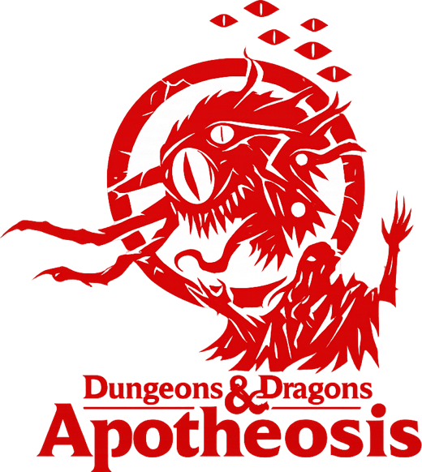
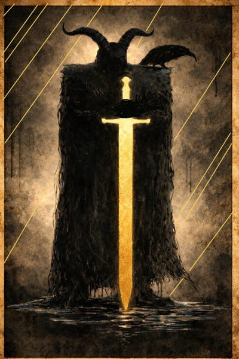
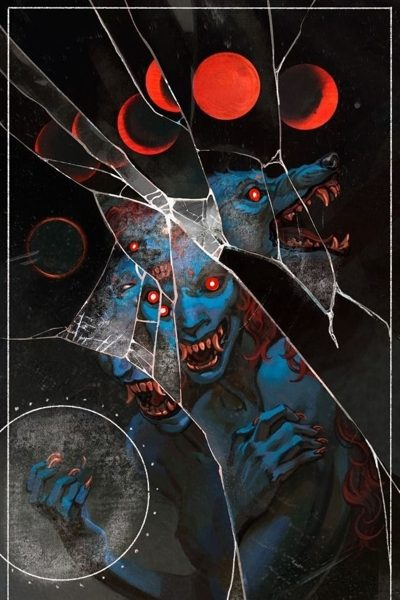
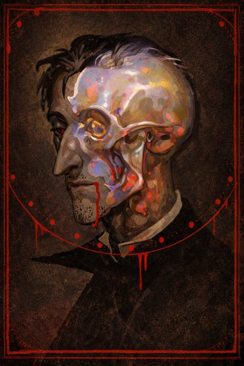

Romulon
The known world turns on its golden domes, seat of the high elves and heart of the Church. Its faith claims to hold up the very structure of reality, and few who kneel there ask what lies beneath it.

A homebrew Dungeons & Dragons setting, campaign, and ruleset
by The Charred Eye
“You're the greatest project you will ever work on…”
Father Indorilius
The known world turns on its golden domes, seat of the high elves and heart of the Church. Its faith claims to hold up the very structure of reality, and few who kneel there ask what lies beneath it.
Far from that light, in the snowbound north, a hamlet clings to the ruins of an ancient snow-elven temple, digging into a past that was buried for a reason.
And on the king's roads between them, a host in black iron marches, burning everything in its path.
A priest with a secret mission, a rogue with a voice inside her head, and a stranger with a blade drawn from his own blood are about to meet in a tavern at the edge of the first snow. What they are looking for, and what is looking for them, is for the table to find out.



Apotheosis is a dark fantasy campaign built on fifth edition, with its own lore, peoples, and rules that lean into consequence and story.